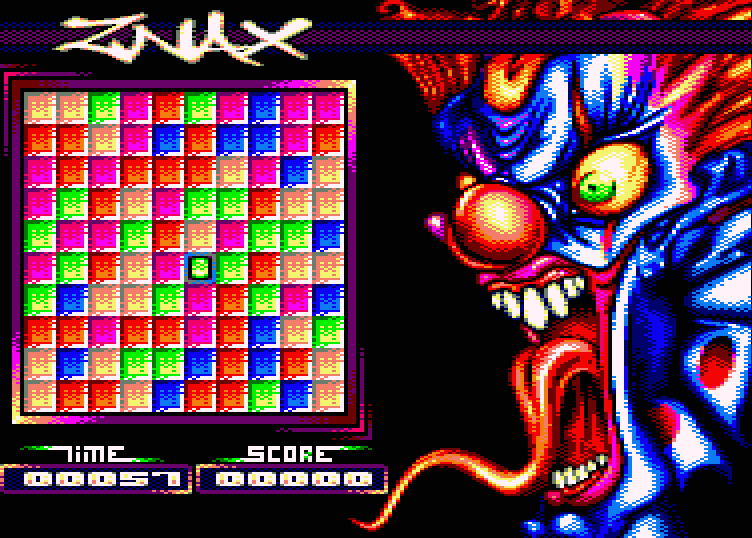
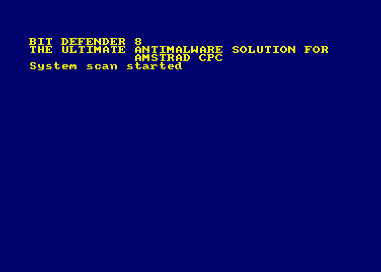
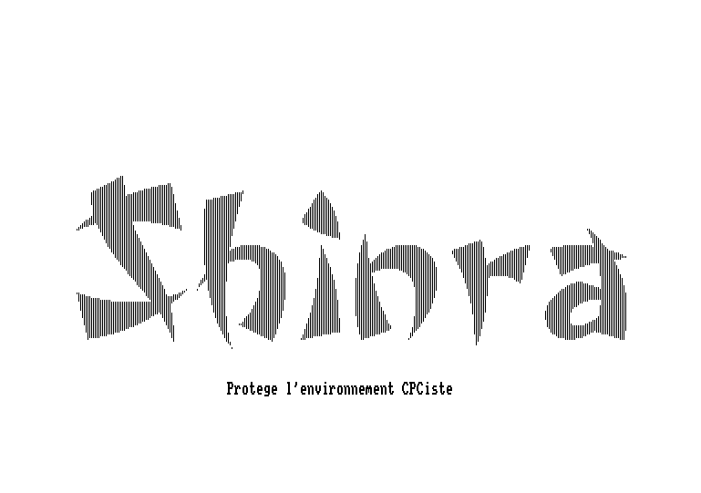
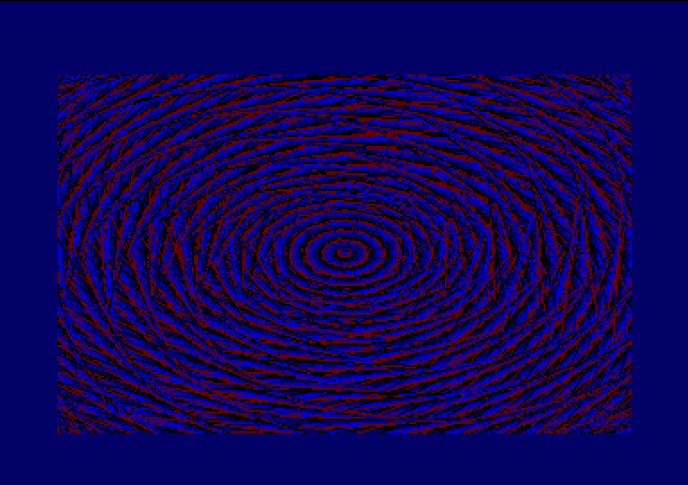
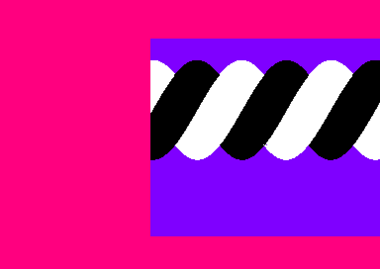
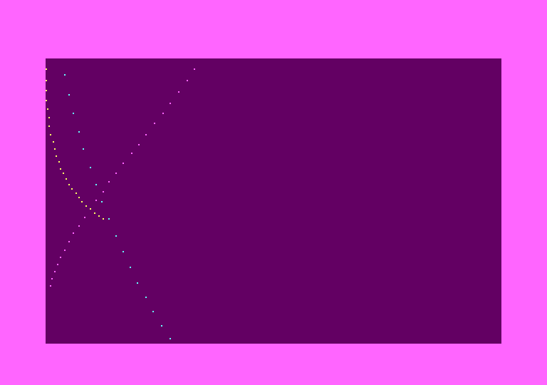
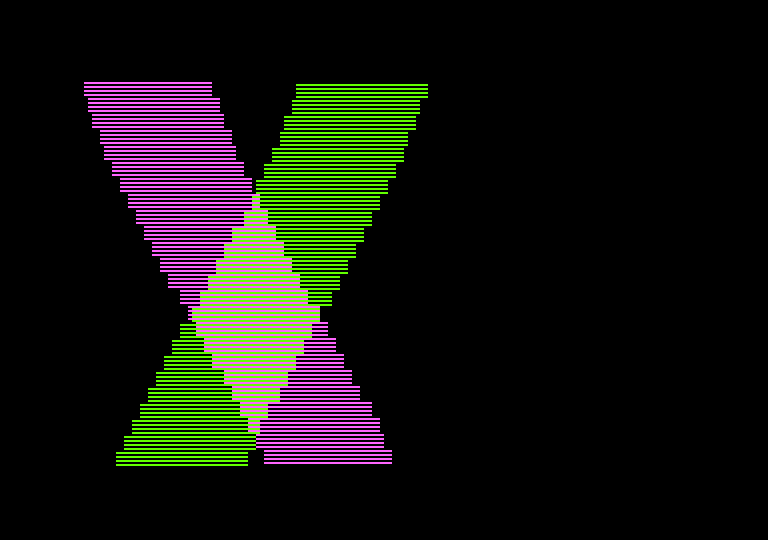
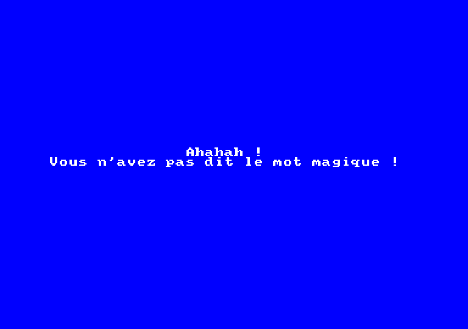

Everything: PulkoMandy
1K prod released at Forever 2018. The theme was "The 8 bit Atlantis", so I went with the idea of rendering Hokusai's great wave (an appropriately watery picture) in an 1K prod, using Bezier curves thanks to the nice float math support in the CPC firmware.
Download DSKCode: PulkoMandy - Music: PulkoMandy - Graphs: CeD
For a change, a game! Work on it was started in 2008, and it was written in BASIC. But then CeD sent me these beautiful graphics in overscan, so I had to rewrite it all in assembler. Eventually it fills the whole 64K RAM with barely a few bytes left.
Download DSKCode, Script, Sound: PulkoMandy
1K BASIC prod released at Forever 16. The theme was "defender of the 8bits", which I interpreted as making an antivirus for our 8bit machines. It is not very good at solving the issues it finds, however.
Download DSKCode: CloudStrife & PulkoMandy - Music: PulkoMandy - Graphs: CeD & PulkoMandy
Finally switching to assembly language ! This demo features a plasma made with a trick never used before. It was done using only real CPC hardware and software (Dams, OCP, Starkos, SFC, Parados and the Basic). No emulators or cross-dev tools were involved.
Will run on any CPC with floppydrive, but not on emulators !
Download DSKCode: PulkoMandy - Design: PulkoMandy
This one is a tunnel, just to show you that Backtro was not that difficult to do. It even features a sidsound.
Will run on any CPC
Download DSKCode: PulkoMandy - Design: PulkoMandy
Well, this time a real twister, but scrolling horizontally :)
Will run on any CPC
Download DSKCode: PulkoMandy - Design: PulkoMandy
75 dots, 256bytes basic. Not much to say :)
Will run on any CPC
Download DSKCode: PulkoMandy - Design: PulkoMandy - Cat: PulkoMandy
Shinra enters the Twister Contest with this simple "twister" written in basic. Not very impressive, but it's here :)
Will run on any CPC
Download DSKCode: Cloudstrife - Gfx: Cloudstrife & PulkoMandy - Zik: PulkoMandy
our first "demo"! Released at Croco Channel 4 for the &2007 bytes compo. This is only a cheatpart. If you want to watch it, you will need to find the correct password.
Will run on any CPC
Download DSK {% include_relative footer.html %}